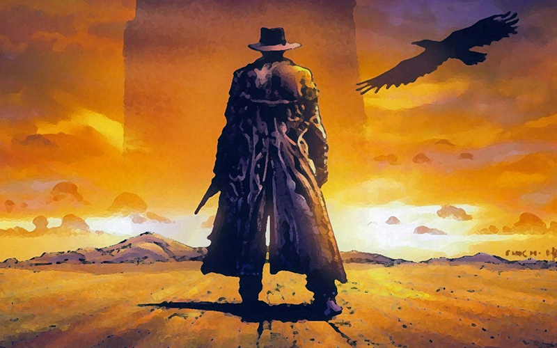
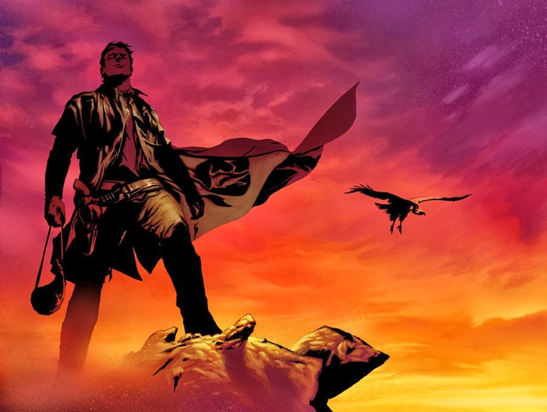
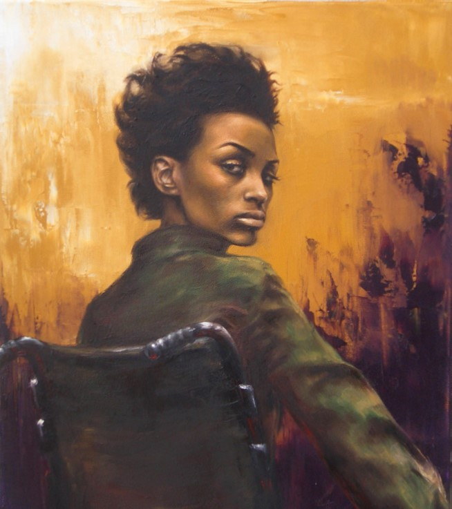
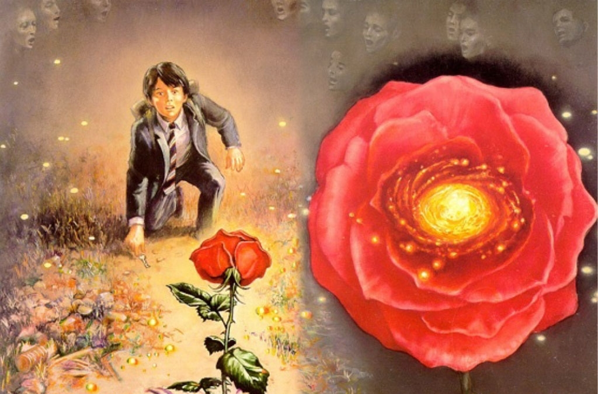
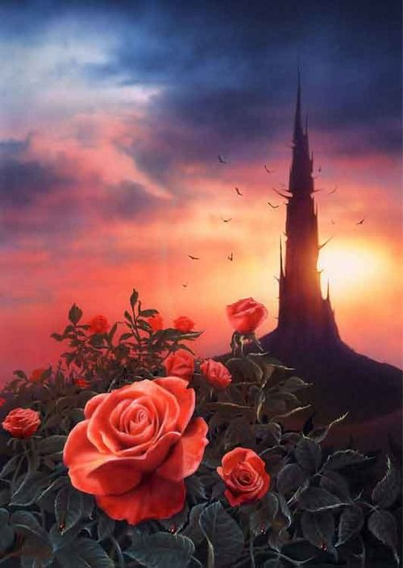

Роланд
Роланд Дискейн, Роланд из Гилеада - последний член древнего рыцарского ордена стрелков. Cын Стивена и Габриэль Дискейнов, родился в феоде Гилеад, во Внутреннем мире. Роланд — последний выживший к началу событий первой книги стрелок, человек, единственной целью которого является найти Тёмную Башню — легендарное место, которое удерживает все миры от разрушения и хаоса — и достигнуть её вершины. Эти поиски стали для Роланда навязчивой идеей: успех поисков значит для него больше, чем жизни его семьи и друзей. Нельзя сказать, что Кинг подробно описывает внешность Роланда. Известно, что он высокий, худой черноволосый мужчина европеоидной расы (Детта Уокер видела в нем цель своих нападок — белого человека, и, соответственно, неоднократно оскорбляла его) с пронзительными синими глазами. В конце первой книги указывается, что он «постарел на десять лет», и в волосах его появилась седина. В начале книги «Извлечение троих» лишается двух пальцев на правой руке. Любопытно, что стрелок — человек неопределённого возраста. Иногда он кажется другим героям почти стариком, иногда — едва ли не юношей. Лицо его также представляется то уродливым, то красивым.
Ка-тет Роланда
Эдди Дин
Эдди — двадцатитрёхлетний наркоман, который в начале книги впервые в своей жизни перевозил кокаин по поручению мафиози. Впервые Эдди появляется в книге «Извлечение троих», где его из таинственной двери с надписью «Узник», ведущей в близкий нашему мир (в город Нью-Йорк), извлекает Роланд. Эдди Дин стал первым «извлечённым» подобным образом; его появление в жизни Роланда было предсказано Оракулом и Уолтером в первой книге серии. До событий романа Эдди жил со своим старшим братом Генри, который и приобщил его к наркотикам, и был очень к нему привязан. Генри погиб от рук бандитов Балазара, а Эдди и Роланд, вступив с ними в перестрелку и победив, перенеслись в мир Роланда. Эдди — человек эмоциональный и внушаемый, как натура творческая. На гадальной карте, соответствующей Эдди, он был обозначен как мужчина с огромным безобразным бабуином на плече, изображающим зависимость (в контексте книги можно понять двояко — зависимость от героина и/или от брата). Из-за своей внушаемости Эдди начал употреблять наркотики и перестал заниматься резьбой по дереву, хотя у него неплохо получалось. Но эта же грань его личности помогла ему обрести новую цель в жизни (поиски Башни), и новый смысл — любовь к жене, Сюзанне.
Сюзанна Дин
Сюзанна Дин (Одетта Сюзанна Холмс/Детта Сюзанна Уокер). Чернокожая красивая девушка, до извлечения ее Роландом из нашего мира страдала шизофренией в крайне острой форме - ни одна из ее половин не догадывалась о существовании другой. Ее болезнь развилась после "несчастного" случая, а скорее покушения, которое устроил Джек Морт. Он же толкнул ее под поезд метро, в результате чего она осталась по колено без ног. Обе ее половины сильно отличались друг от друга - энергия и ненависть к окружаемым Детты Уокер просто выплескивалась из нее, Одетта Холмс была добра и полна дружелюбия к окружающим. После извлечения (и излечения) девушка стала называть себя Сюзанна Дин. В новой женщине объединились две ее половинки - энергия Детты и доброта Одетты. Вначале её доминирующая личность — Одетта Сюзанна Холмс, благовоспитанная, в целом, приятная, но излишне чопорная и самодовольная женщина, активный участник движения за гражданские права. Временами, однако, ею «овладевает» вторая половина её личности, Детта Сюзанна Уокер — расистка с преступными наклонностями, грубая и малообразованная, но с острым умом и развитой волей, невероятно коварная. В конце второй книги Роланд исцелил Сюзанну, заставив её взглянуть через третью дверь на саму себя, — её личности слились в одну, намного более уравновешенную, и она берет себе имя Сюзанна Дин, став женой Эдди. Сюзанна обладает памятью обеих женщин — Холмс и Уокер, и способна использовать их умения и личные качества осознанно, когда она сама этого пожелает.
Джейк Чеймберз
Джейк Чеймберз. В момент встречи со Стрелком Джейку было одиннадцать лет. Это был симпатичный, хорошо сложенный мальчик со светлыми выгоревшими волосами. До того, как Джейк попал в мир Роланда, он жил с родителями в Нью-Йорке, которые, как думал Джейк, не то чтобы на дух его не выносили, но, похоже, давно уже не замечали. Его мать и отец были профессионалами, лучшими в своем деле, и Джейк невольно перенял многие характерные их черты. Джейк — красивый светловолосый мальчик одиннадцати лет, но выглядевший младше своего возраста. У него ярко-синие глаза. В младшем возрасте он был даже похож на девочку, пока не убедил родителей коротко остричь его. До того, как попасть в мир Роланда, Джейк выглядит чистеньким и аккуратным ребенком. В момент смерти был одет в синие джинсы с коричневой заплаткой над коленом и рубашку из грубой ткани, соответственно, после гибели он предстает в таком виде перед Стрелком.
Ыш (ушастик-путаник)

Ыш - ушастик-путаник, один из представителей фауны мира Роланда. Эти животные описываются, как нечто среднее между енотом и собакой, со спиралевидным закрученным хвостом. Необычны тем, что могут имитировать человеческую речь, обычно повторяя окончания слов, услышанных от людей. Впервые появившись в третьей книге цикла, Ыш очень привязывается к одному из главных героев, Джейку Чеймберзу. По дороге в Луд Джейк встречает ушастика-путаника. Когда он впервые видит его, он говорит зверьку: «Как поживаешь, малыш?» — и ушастик, передразнивая Джейка, произносит слово, ставшее его именем — «Ыш». Сначала кажется, что Ыш — всего лишь сообразительное прирученное животное, но впоследствии оказывается, что ушастик способен соображать и сопереживать почти как человек. Ыш становится членом ка-тета Роланда и близким другом, насколько это возможно, для Джейка. По дороге в Луд Джейк встречает ушастика-путаника. Когда он впервые видит его, он говорит зверьку: «Как поживаешь, малыш?» — и ушастик, передразнивая Джейка, произносит слово, ставшее его именем — «Ыш». Сначала кажется, что Ыш — всего лишь сообразительное прирученное животное, но впоследствии оказывается, что ушастик способен соображать и сопереживать почти как человек. Ыш становится членом ка-тета Роланда и близким другом, насколько это возможно, для Джейка.
Темная башня
Книга прерывается самим Стивеном Кингом, который предлагает читателю остановиться на этом моменте, ведь «концовки безжалостны», и книгу можно оставить на счастливом моменте воссоединения всего ка-тета, кроме Роланда, который все же был в башне. После уговоров остановиться, автор все же продолжает. Войдя в Тёмную Башню, Роланд понимает, что башня рассказывает ему его собственную историю: каждая из комнат башни соответствует какому-либо этапу его жизни. Комната на вершине Тёмной Башни закрыта дверью с надписью «Роланд» и символом на дверной ручке: розой, оплетающей револьвер. Открыв дверь, Роланд обнаруживает, что она ведет в пустыню, с которой начинается цикл. Стрелок понимает, что он проделывал этот путь уже сотни раз. Он просит башню проявить милосердие, но Башня отталкивает Роланда и стирает ему память, ведь идти по этому пути и есть его судьба. Заканчивается повествование тем, что стрелок, теперь уже с рогом Эльда, вновь гонится за Уолтером О’Димом. Это одновременно возвращает Роланда к началу повествования, но вместе с этим читателю предлагается и прямой намек, что все произойдет иначе, ведь на этот раз у него есть древняя реликвия, которую он отвергал, и о чем периодически вспоминал и жалел на протяжении всего цикла. Шепот Башни говорит ему, что если он пройдет этот путь, не уронив чести, его предназначение будет выполнено. Последняя строка повторяет первую строку первой книги, окончательно замыкая историю в круг: «человек в черном уходил в пустыню, и стрелок последовал за ним».
